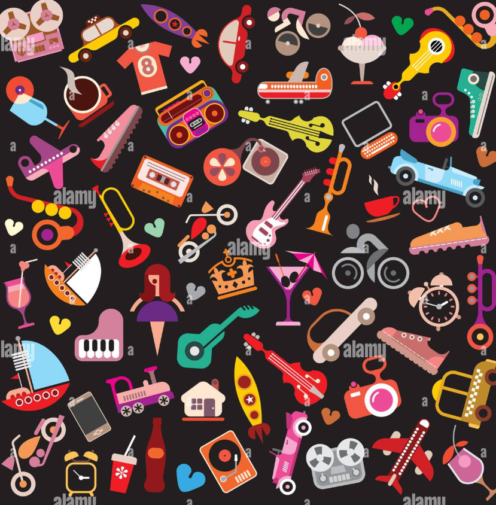

- The wheel is considered one of the most important inventions in history.
- Paper was invented in China around 100 BCE.
- Magnets can attract objects made of iron, nickel, or cobalt.
- Glass is actually a very slow-moving liquid.
- The light bulb was independently invented by several people, including Thomas Edison.
- Velcro was inspired by burrs sticking to a dog’s fur.
- The first camera took an 8-hour photo exposure.
- Ballpoint pens work using gravity and tiny rotating balls.
- Microwaves heat food by vibrating water molecules.
- The compass revolutionized navigation for thousands of years.
|

|